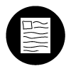

<!DOCTYPE html>
<html>
<head>
<title>Digital Photography Project</title>
</head>
<body background="polka-2.png"></body>

	<table bgcolor="A7AFC4" align="center" border="5" style="width:900px; border-style: none;" cellspacing="10" cellpadding="10">
		
<tr>
		<td colspan="3" bgcolor="ffffff" align="center">
			<h1 style="font-family:Trebuchet MS;">Digital Photography Project</h1>
	</tr>
<br>

<tr>
		<td style="width: 600px" align="center">
	
	<meta name="viewport" content="width=device-width, initial-scale=1">
<style>
* {box-sizing: border-box}
body {font-family: Trebuchet MS, sans-serif; margin:0}
.mySlides {display: none}
img {vertical-align: middle;}

/* Slideshow container */
.slideshow-container {
  max-width: 575px;
  position: relative;
  margin: auto;
  border: 2px solid black;
  background-color: white;
}

/* Next & previous buttons */
.prev, .next }
  cursor: pointer;
  position: absolute;
  top: 50%;
  width: auto;
  padding: 16px;
  margin-top: -22px;
  color: black;
  font-weight: bold;
  font-size: 14px;
  transition: 0.6s ease;
  border-radius: 0 3px 3px 0;
  user-select: none;
}

/* Position the "next button" to the right */
.next {
  right: 0;
  border-radius: 3px 0 0 3px;
}

/* On hover, add a black background color with a little bit see-through */
.prev:hover, .next:hover {
  background-color: transparent;
}

/* Caption text */
.text {
  color: black;
  font-size: 15px;
  padding: 8px 12px;
  position: absolute;
  bottom: 8px;
  width: 100%;
  text-align: center;
}

/* Number text (1/3 etc) */
.numbertext {
  color: black;
  font-size: 12px;
  padding: 8px 12px;
  position: absolute;
  top: 0;
}

/* The dots/bullets/indicators */
.dot {
  cursor: pointer;
  height: 15px;
  width: 15px;
  margin: 0 2px;
  background-color: #bbb;
  border-radius: 50%;
  display: inline-block;
  transition: background-color 0.6s ease;
}

.active, .dot:hover {
  background-color: #717171;
}

/* Fading animation */
.fade {
  animation-name: fade;
  animation-duration: 1.5s;
}

@keyframes fade {
  from {opacity: .4} 
  to {opacity: 1}
}

/* On smaller screens, decrease text size */
@media only screen and (max-width: 300px) {
  .prev, .next,.text {font-size: 11px}
}
</style>
</head>
<body>

<div class="slideshow-container">

<div class="mySlides fade">
  <div class="numbertext">1 / 4</div>
  
</div>

<div class="mySlides fade">
  <div class="numbertext">2 / 4</div>
  
</div>

<div class="mySlides fade">
  <div class="numbertext">3 / 4</div>
  
</div>

<div class="mySlides fade">
  <div class="numbertext">4 / 4</div>
  
</div>

<a class="prev" onclick="plusSlides(-1)"><</a>
<a class="next" onclick="plusSlides(1)">></a>

<br><br>

<div style="text-align:center">
  <span class="dot" onclick="currentSlide(1)"></span> 
  <span class="dot" onclick="currentSlide(2)"></span> 
  <span class="dot" onclick="currentSlide(3)"></span> 
  <span class="dot" onclick="currentSlide(4)"></span> 
</div>

<br>

<script>
let slideIndex = 1;
showSlides(slideIndex);

function plusSlides(n) {
  showSlides(slideIndex += n);
}

function currentSlide(n) {
  showSlides(slideIndex = n);
}

function showSlides(n) {
  let i;
  let slides = document.getElementsByClassName("mySlides");
  let dots = document.getElementsByClassName("dot");
  if (n > slides.length) {slideIndex = 1}    
  if (n < 1) {slideIndex = slides.length}
  for (i = 0; i < slides.length; i++) {
    slides[i].style.display = "none";  
  }
  for (i = 0; i < dots.length; i++) {
    dots[i].className = dots[i].className.replace(" active", "");
  }
  slides[slideIndex-1].style.display = "block";  
  dots[slideIndex-1].className += " active";
}
</script>

</body>
</html> 

		<td style="width: 75px" align="center">
          <a href="index.html"><button style="background-color:transparent; border: none; text-align: center;  color: black;" onclick="colorFn(this)"><p style= align="center"></button></a>
      <a href="video.html"><button style="background-color:transparent; border: none; text-align: center;  color: black;" onclick="colorFn(this)"><p style= align="center"></button></a>
      <a href="info.html"><button style="background-color: transparent; border: none; text-align: center; color: black;" onclick="colorFn(this)"><p style= align="center"></button></a>
      <a href="photo.html"><button style="background-color: transparent; border: none; text-align: center; transparent; color: black;" onclick="colorFn(this)"><p style= align="center"></button></a>
    </td>

</tr>

<tr>
	<td colspan="3" align="left">
		<p style="font-family: Palatino; font-size: 18px">For the Digital Photography project, we used Adobe Photoshop to edit various photos we shot ourselves. We learned the basics of photography- lighting, composition, and resolution. We utilized indoor and outdoor lighting in our pictures. Our edited photographs and original showed visible differences. 
		
	</td>
	</td></td>

<tr>
	<td colspan="3" bgcolor="ffffff" align="center">
		<p style="font-family:Trebuchet MS"> &copy; 2025 Micah Acampado
	</td>
	</table>

</body bgcolor="F8F8F8">
</html>